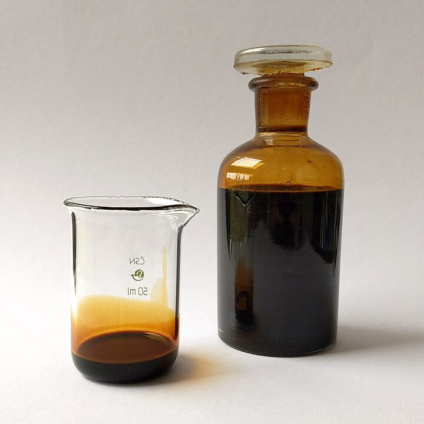
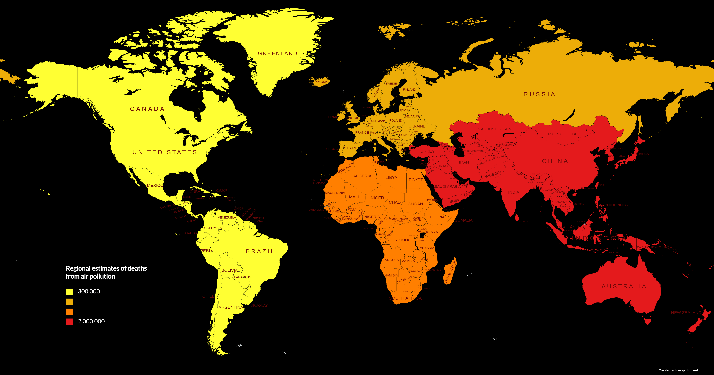

(Factories with smoke by Patrick Hendry on Unsplash accessed 13/12/2021).
Petroleum, also known as crude oil and oil, is a naturally occurring, yellowish-black liquid found in geological formations beneath the Earth's surface. It is commonly refined into various types of fuels. The name petroleum covers both naturally occurring unprocessed crude oil and petroleum products that are made up of refined crude oil. A fossil fuel, petroleum is formed when large quantities of dead organisms, mostly zooplankton and algae, are buried underneath sedimentary rock and subjected to both intense heat and pressure.
(Petroleum sample by Nefronus on Wikipedia accessed 15/12/2021).
(White and brown abstract painting by Jon Moore on Unsplash accessed 13/12/2021).
As of 2018, about a quarter of annual global greenhouse gas emissions is the carbon dioxide from burning petroleum (plus methane leaks from the industry). Along with the burning of coal, petroleum combustion is the largest contributor to the increase in atmospheric CO2. Atmospheric CO2 has risen over the last 150 years to current levels of over 415 ppmv, from the 180–300 ppmv of the prior 800 thousand years.
(Smoke coming out from the factory by Kelly L on Pexels accessed 15/12/2021).
(Gray building with smoke by Brina Blum on Unsplash accessed 15/12/2021).
Oil extraction is simply the removal of oil from the reservoir (oil pool). Oil is often recovered as a water-in-oil emulsion, and specialty chemicals called demulsifiers are used to separate the oil from water. Oil extraction is costly and often environmentally damaging. Offshore exploration and extraction of oil disturb the surrounding marine environment.
(Amoco Cadiz grounding and oil spill by Noaa on Wikipedia accessed 13/12/2021).
"Every year, around 7 million deaths are due to exposure from both outdoor and household air pollution"(WHO).
Regional estimates of deaths from air pollution (data from WHO).
Petroleum has mostly been recovered by oil drilling. Drilling is carried out after studies of structural geology, sedimentary basin analysis, and reservoir characterisation. Recent improvements to technologies have also led to exploitation of other unconventional reserves such as oil sands and oil shale. Petroleum is used in manufacturing a wide variety of materials, and it is estimated that the world consumes about 100 million barrels each day.
(Aerial shot of landscape by CityXcape on Pexels accessed 15/12/2021).
(Soil furrow by Sonja on Pixabay accessed 13/12/2021).
{kind=link}
{kind=link}